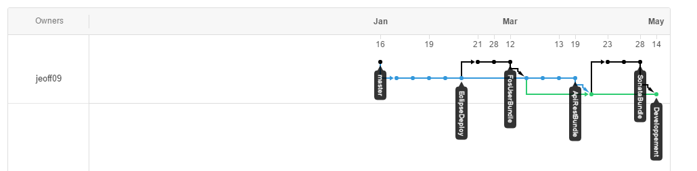

Versionning et code source
Pour permettre le développement optimal de la solution le code source se doit d’être versionné.
Chaque étape clé du développement doit être versionné à partir de la branche développement. Le nom de cette étape définira le nom de la branche associée.
Le fonctionnement est relativement simple :
Une fois le projet terminé et validé la branche développement sera mergé sur la branche master du projet (La branche master ne contient que les versions terminer du projet).
Les sources de la solution sont divisées en 4 dépôts différents :
Voici un exemple de projet versionné :

Créé avec HelpNDoc Personal Edition: Outil de création d'aide complet